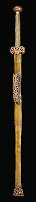

|  |
ArmouryArms and weapons were kept here. Defence was very important for the city of Chang'an. Towards the end of the Western Han period (206 B.C.-A.D. 9), Chang'an came under numerous attacks. It was almost destroyed by the Red Eyebrows, a rebel group, in A.D. 23. The Han dynasty moved their capital east to Luoyang. However, Chang'an was rebuilt several times and remained a very important city. This sword has a lacquered scabbard. It is made of iron, which replaced bronze as the material used for weaponry during the Han dynasty.
|